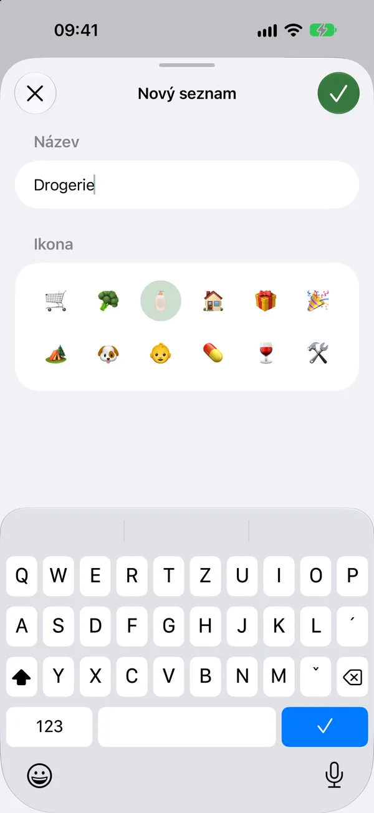

Jak mít víc nákupních seznamů
-
Krok 1 Klepněte na název seznamu
Nahoře v kartě Seznam klepněte na název seznamu (například Potraviny ˅). Otevře se nabídka se seznamy.

-
Krok 2 Vytvořte nový seznam
Klepněte na Nový seznam, zadejte Název (například Drogerie), vyberte Ikonu a potvrďte zelenou fajfkou ✓.

-
Krok 3 Přepínejte a spravujte seznamy
Stejným klepnutím na název se přepnete na jiný seznam. Ve Spravovat seznamy je přejmenujete, přesunete nebo smažete.
Časté otázky
Vidí moje seznamy i rodina?
Ano, pokud máte společnou domácnost. Členové domácnosti vidí všechny seznamy a změny v nich hned.
Dá se smazat každý seznam?
Ano, kromě posledního – alespoň jeden seznam musí zůstat.
Další otázky najdete na stránce Podpora.